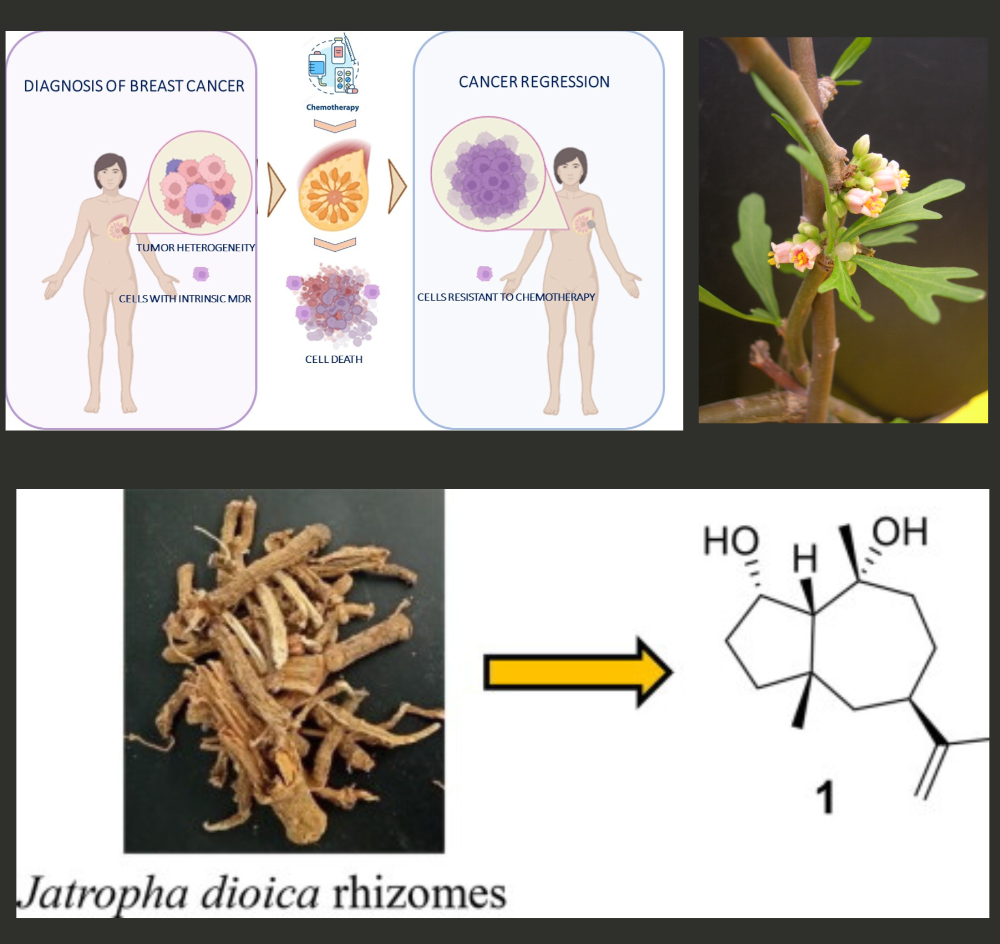
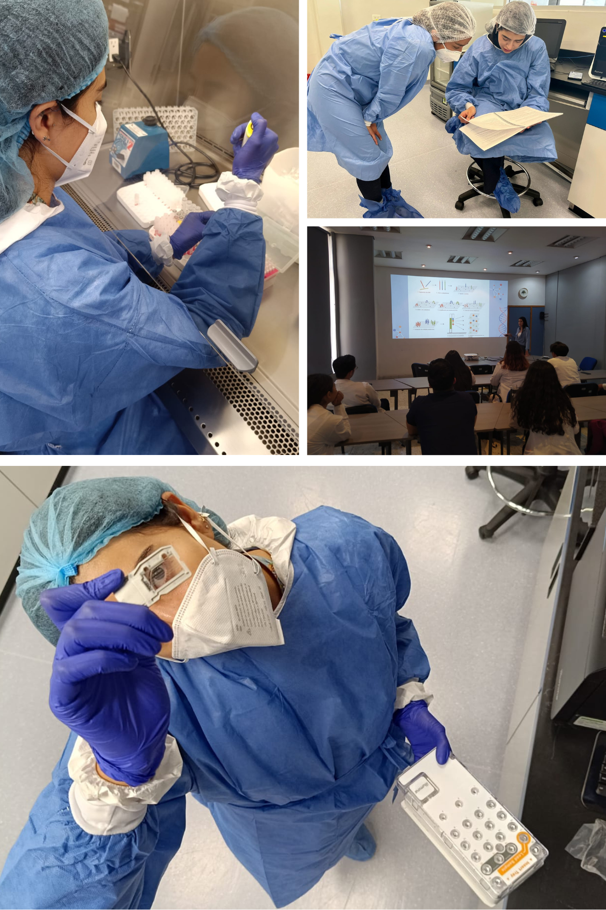

Miriam Sarahi Lozano Gamboa
PhD Candidate
PhD Candidate
Welcome to my personal website! I am a dedicated and passionate researcher with a strong background in biotechnology and molecular biology. My journey began with a Bachelor’s degree in Biotechnology from the Autonomous University of Aguascalientes. Building on this, I pursued a Master’s degree in Molecular Biology at the Potosino Institute of Scientific and Technological Research (IPICyT), focusing on the fascinating field of cancer research and multidrug resistance.
My master’s thesis explored the role of diterpenes derived from Jatropha dioica in modulating multidrug resistance in human breast carcinoma cell lines. This research not only deepened my expertise in experimental techniques but also ignited my passion for understanding complex biological systems and their interactions with therapeutic agents.
Currently, I am working at the Laboratorio Estatal de Salud Pública (ISSEA) in molecular epidemiology, focusing on projects related to antibiotic-resistant bacteria and their genomic profiles. Over the past four years, I have refined my expertise in next-generation sequencing and bioinformatics, contributing to research that addresses critical public health challenges. This work is carried out in collaboration with Dr. Corina-Diana Ceapă, with the aim of advancing our understanding of the genomic profiles of resistant bacteria, which pose a significant global health threat. Additionally, I have two years of experience teaching molecular biology.
I am passionate about international volunteering and have participated in various programs through Erasmus. I also have a keen interest in animals and art. I enjoy painting and actively participate in art-related activities.